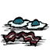

Bacon and Eggs is a Meat Food item cooked in the Crock Pot by adding 2.0 units of Eggs and 1.25 units of Meats. It takes 40 seconds to cook.
Adding more than 1 Monster Meat may result in Monster Lasagna, unless 1 Twig is also added; in this case, a Tallbird Egg must be added, as one normal Egg does not provide enough Egg value to create Bacon and Eggs. Adding any Vegetable will result in Pierogi.